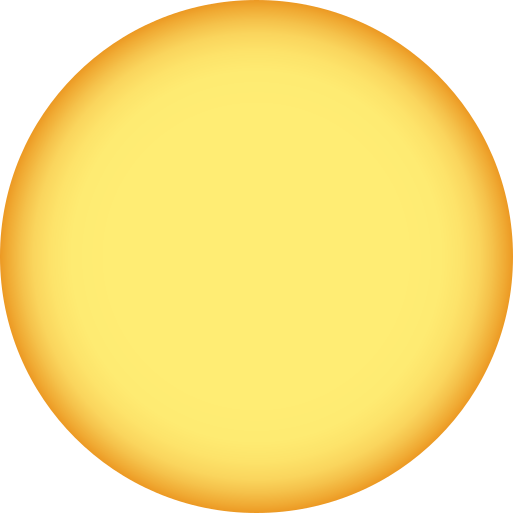
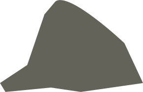

The Easter Bunny tradition made its way to the US in the 18th century. It is believed to have originated in Europe where it was actually the Easter Hare. Other Easter traditions include wearing Easter bonnets, making Easter baskets and having Easter egg hunts.
Easter is celebrated at different times by Eastern and Western Christians. That’s because the dates for Easter in Eastern Christianity are based on the Julian Calendar.
The white lily, the symbol of the resurrection, is the special Easter flower.
The traditional act of painting eggs is called Pysanka.
The name Easter owes its origin from Easter, the Anglo-Saxon goddess who symbolizes hare and egg.
In the old days pretzels were associated with Easter because the twists of the pretzel were thought to resemble arms crossing in prayer.
Christians consider Easter eggs to symbolize joy and celebration, new life and resurrection.
Easter is the celebration of the resurrection of Christ three days after his death. It is the oldest Christian holiday and the most important day of the church year.
The White House hosts an Easter Egg Roll on the front lawn each year. This tradition was started by President Rutherford B. Hayes in 1878.
The exchange of eggs for Easter dates back to a springtime custom older than Easter itself in which eggs were given as a symbol of rebirth in many cultures.